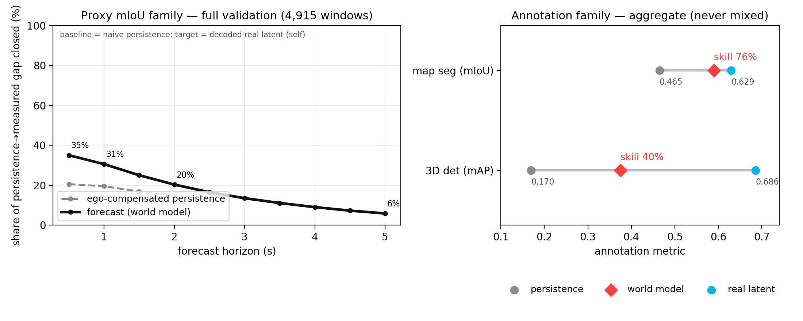
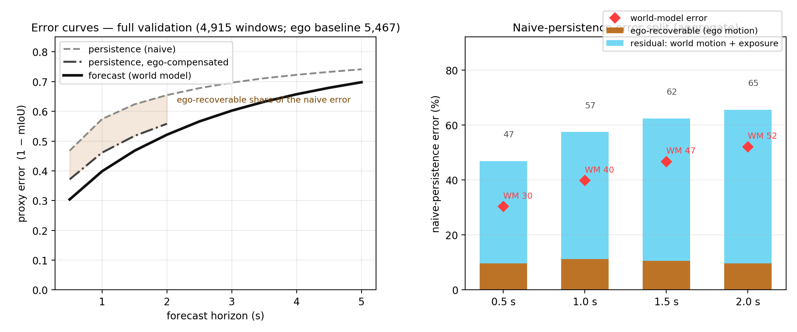
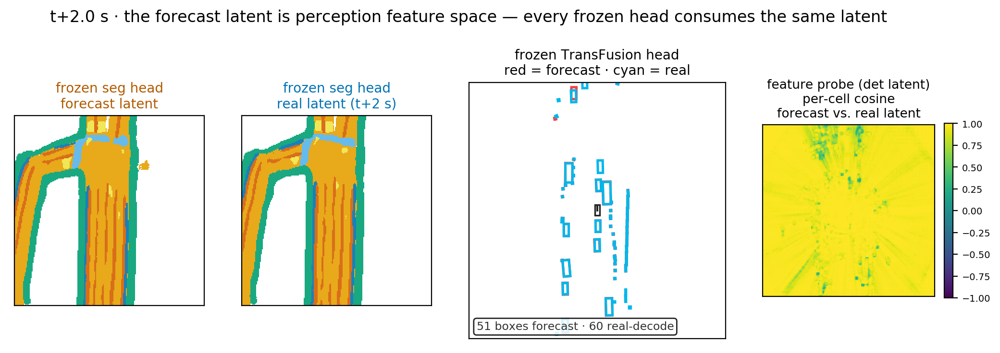
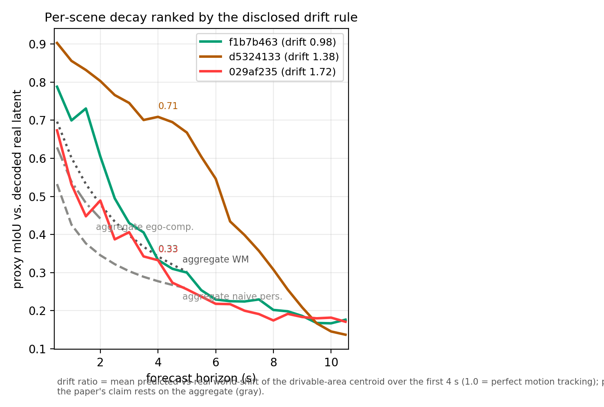
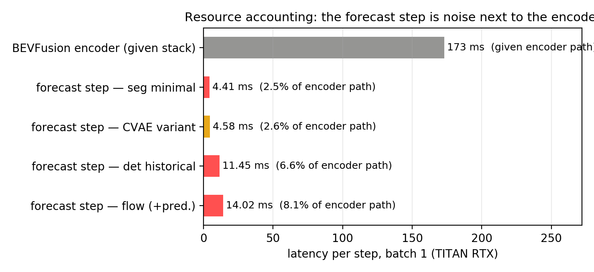

Uncommitted review material · generated by
scripts/review_draft.py from existing dumps · nothing here
is merged into the page or paper yet
Prototype 0
Schematic strip: "how the duet was made"
Proposed placement: directly above the showcase on the
project page, and as a compact architecture panel in the paper.
Setup: 3 observed BEV latents enter a 6M-param
transformer; it emits the next fused BEV latent; the stack's own
frozen heads decode map + detections. No retraining anywhere; the
forecast step is the only added cost.
Prototype 1
Skill vs. persistence — one number per horizon
Paper: replace or complement the three-column table of
Section Results. Page: a second chart beside the decay panel.

Skill = share of the persistence → measured-latent
gap closed. Left (proxy family, 4,915 windows): the forecast closes 35%
at 0.5 s, still 6% at 5 s; the ego-compensated baseline stalls at ~20%
and dries up. Right (annotation family, single aggregate points — never
mixed with the proxy curve): seg 76%, det 40%. Same storytelling, both
metric families intact.
Prototype 2
Where the naive error comes from: ego motion vs. the world
Paper: analysis subsection after the baselines.
Makes "why persistence is weak" quantitative and shows what the world
model implicitly learns.

~20% of the naive-persistence error at any horizon is
recoverable by warping with perfect ego pose; the model beats the
ego-compensated baseline and absorbs that ego share, so its error
(red diamonds) sits below the split bars at every horizon. The residual
band (blue) is world motion — the part modelled, not compensated.
Prototype 3
One forecast latent, three views (teaser)
Paper: teaser / architecture-consequence figure.
Page: could be a static plate beside the schematic strip.

t+2 s, construction-street window: frozen seg head
decode (near-identical maps), frozen TransFusion decode (boxes), and the
per-cell cosine probe of the det latent — mean 0.958 (IQR 0.961–0.988)
against the real latent. Argues "prediction in perception feature
space" without a flattering scene choice.
Prototype 4
Best/worst per-scene decay, pick rule disclosed
Paper: qualitative-figure companion with an honest
error-depth footnote. Page: "known failures" entry under the showcase.

Three featured scenes selected by the same disclosed
rules as the GIFs, ranked by motion tracking (drift ratio). The orange
scene (selected for the page's street demo) decays slowly; the red scene
shows where the model can lose a scene early — its per-scene curve dips
below the compensated baseline, which is exactly why claims rest on the
aggregate.
Prototype 5
Resource accounting at a glance
Paper: alongside the resource table. Page: under the
results section.

The forecast step costs 2.5–8.1% of one encoder pass;
"runs alongside the perception stack" becomes a picture rather than a
sentence. Bars straight from the paper's resource table (TITAN RTX,
batch 1).
Prototype 6
Linked scene ↔ decay overlay for the page
Page: replaces/augments the corner sparkline — pick a
scene chip, the aggregate chart gains the scene overlay.
Interaction: the gray curves are the aggregate
(identical to the page chart); the colored overlay is the selected
scene's proxy decay (first 5 s, from the rollout dumps). Static — no
build step, no external libs.